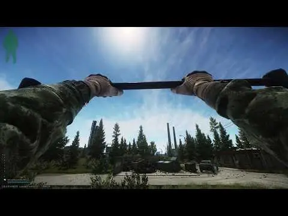

Mod
Featured
Climbable Ladders
- Downloads
- 36,910
- Favourites
- 199
- Mod lists
- 354
Ladders. Also pull up bars. When on a bar press [A/D] to swing.

Version
1.0.2
SPT ~4.0.0
Fika: compatible
30,921 downloads920.3 KB
- can now jump off into the direction of input (at the top of the ladder can manually jump up forward if auto-vaulting didnt work for some reason)
- fixed climbing all tanker wagons
- fixed bad ladder on customs near west railroad that pushed away at the top
- added ladders:
- woods scav bunker (need to climb up to the container first)
- customs watchtower near old gas station railroad
- customs west
VirusTotal: report 1
Version
1.0.1
SPT ~4.0.0
Fika: compatible
4,510 downloads914.7 KB
- now using native tarkov input (respects your game binds and keyboard layout)
- fixed exiting too soon at the top resulting in falling down in some places (was conflicting with Increase Climb Height mod)
- fixed broken ladder near the building close to the rail car for the skier quest on customs
VirusTotal: report 1
Version
1.0.0
SPT ~4.0.0
Fika: compatible
1,479 downloads914.1 KB
release